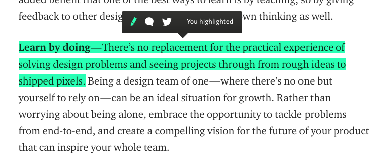

The Opportunity
As the researcher and designer of this project, I wanted to explore the current issues of Apple's Podcasts mobile app and propose solutions that can improve current user experience.
Podcasts are not only a form of entertainment, but are also a way to actively learn and engage with inspiring stories, knowledge, and insight. They are powerful tools for self-development and helps people understand the world around them. Podcasts encourages users to explore topics of interest, learn, and grow offering a wide range of categories such as news, business, meditation, technology, and more
As a avid podcasts listener myself, I was able to better understand the value of the app and as a result, I wanted to critically assess whether the Apple podcasts was providing an optimal experience for its users.
Design Process
1. User Research + Analysis:
2. Ideate design solutions
3. Redesign: modify current design and execute new designs
4. Create responsive prototype:
5. Get feedback from users:
User Research + Analysis
I asked users to walk through the process of downloading and listening to a podcast and to share their experience using the app. I then proceeded to analyze the current design to better understand the causes behind unpleasant user experiences. Based on the research, I discovered three major user pain points:
The current design of Podcasts is limited in that they offer basic options and actions, but does not create purposeful, delightful experiences. So while it does its job of letting users download and listen to podcasts, it does not go beyond to provide the best possible listening experience.
What are some ways of ensuring positive experiences?
Make it memorable: Users listen to podcasts because they want to listen to an entertaining story or know more about something. What if there are specific parts of a podcast that they want to keep because it made that much of an impact on them? What if we can design for users to keep bits and pieces of insights to come back to?
Make it personal: Give users the ability to organize their saved content how they like it. Music and podcast preferences are different for each individual, so it only makes sense to give users autonomy and freedom to categorize in a way that makes most sense to them.
Be inviting: It's frustrating when it takes an extra step to play an episode. What if we let users click an episode and play right away, without taking them to another screen to click play? What if we let users immediately decide what they want to do with a new or saved episode (such as removing, saving, playing next, sharing)? Inviting the users to interact easily and quickly with the interface will provide greater satisfaction and productivity.
Possible Design Solutions
1. Add an audio clipping feature
Allowing users to save snippets of podcasts will give them the ability to save, reflect back on, and share their favorite podcasts moments, whether they be inspirational, educational, or weirdly interesting.
Instead of having users go through entire episodes of that particular podcast to find their moment or favorite insights, they can choose to clip the audio and keep it.
I was inspired by Medium.com, where readers can highlight a specific section of an article to save and to share. If we can design for people to collect memorable words, why not audio?
 from Medium.com
2. Create Playlists in Library
Giving users the freedom to organize and categorize their podcasts episodes will allow them to personalize and value the app more. Whether it be creating playlists based on topic (design, educational, motivational, spiritual, etc) or occasion (long car rides, exercising, for anxiety), users will be empowered to take full advantage of what podcasts have to offer.
3. Allow users to play podcasts immediately and give them more options when browsing new podcasts
Instead of requiring users to take an extra step to play a podcast episode, giving them the immediate ability and satisfaction of playing audio with one tap will let them explore more episodes and filter through what they want/don't want to listen to more quickly. While they are able to play episodes more easily, they should also be given more options others than downloading + saving episodes such as: adding to playlist, clipping audio, and sharing episode.
User Feedback
I received feedback from the same people who I interviewed. They found the redesigned app felt more personal with individualized playlists and clips that can be shared. The ability to access and play podcasts directly proved to be a more efficient flow than the current design as it shortened the time and effort to add and listen to podcasts, which attracts them to explore more podcasts and use the app more efficiently.